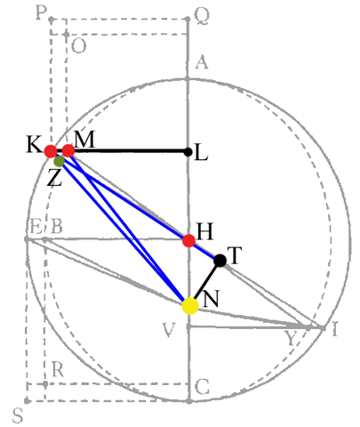
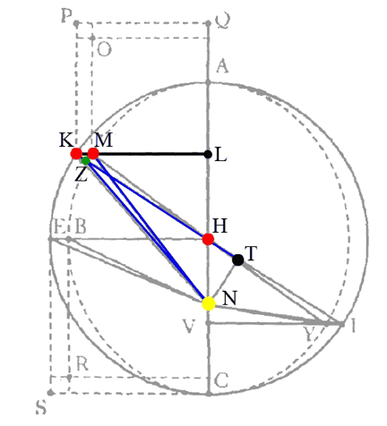
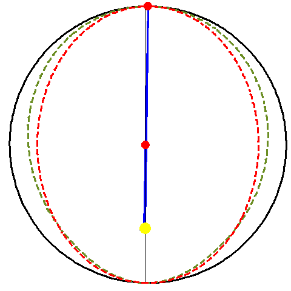
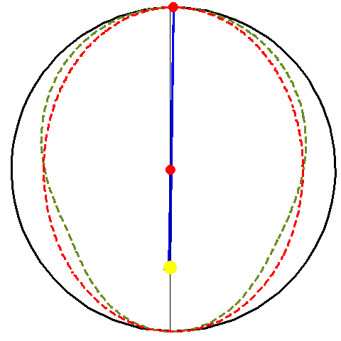

This web page was in error until May 9, 2007. The new planetary position was incorrectly put on the line NK, coming from the sun, rather than line HK, coming from the center. The web page is now correct. Here are the old and new pictures, so you can compare them:
| Old (wrong) | New (correct) |
|---|---|
|  |  |
|  |  |